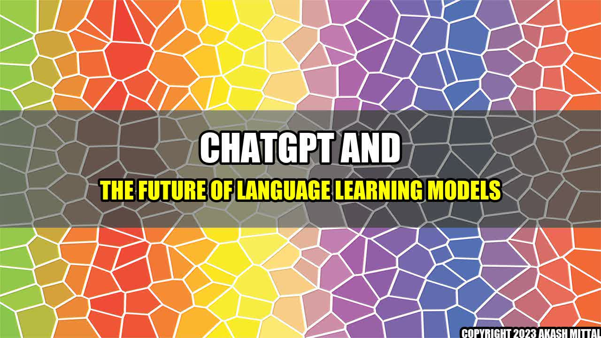

ChatGPT and the Future of Language Learning Models
How AI-Powered Language Learning is Revolutionizing Education
By
When I first started learning English, I struggled to understand even the simplest phrases. As a small-town boy from India, my exposure to the language was limited. But today, thanks to technology, language learning has become simpler, more accessible and more effective than ever before.
One such innovation in the field is the ChatGPT app, an AI-powered language learning model that uses natural language processing and machine learning to facilitate communication between learners and native speakers. ChatGPT is one of several Language Learning Models (LLMs) that use technology to make language learning more natural and intuitive.
The technology behind ChatGPT and other LLMs relies on the use of algorithms and data sets that enable the program to understand and interpret human language. Essentially, this allows ChatGPT to interpret and understand natural language in a way that is similar to humans. This is why the app is so effective at helping users master new languages.
Real Life Examples of AI-powered Language Learning
ChatGPT is not the only LLM out there. Other companies are also using AI-powered technology to make language learning easier and more effective. Mango Languages, for example, uses AI to help learners identify patterns in speech and sentence structure. Busuu uses AI to identify areas where learners need improvement, and tailor its instruction to address those needs.
One of the most interesting examples of AI-powered language learning comes from Duolingo. The company recently released a new feature called the "Duolingo Stories" which uses AI to create stories that increase in difficulty as the learner progresses. The stories are generated from a database of real-life stories, so they are not only engaging, but also practical and relevant.
The Future of Language Learning Models
The potential applications of LLMs is vast. As we continue to develop more sophisticated AI algorithms, we can expect to see even more advanced language learning models. Furthermore, as these models become more refined, they will be able to handle even more complex language tasks, including translation.
But there are also some potential drawbacks to the use of AI in language learning. There is a risk that some learners may rely too heavily on the technology and not develop their own language skills. Additionally, there is a risk that the technology may be used to replace human instructors, rather than complement them.
Conclusion
LLMs like ChatGPT have the potential to revolutionize the way we learn languages. These apps are user-friendly, engaging and effective. But as with any technology, there are potential downsides. Nonetheless, it is clear that AI-powered language learning models will continue to play an important role in education for many years to come.
Akash Mittal Tech Article
Share on Twitter Share on LinkedIn